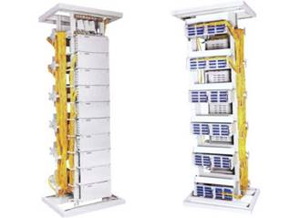

Optical Main Distribution Frame (OMDF)

OMDF adopts the management structure of OMDF, the cables to the outside world are terminated on the vertical side and indoors equipments are arranged on the vertical side. Cables and pigtails of equipments are spliced on the tray during installation. The operation and maintenance are managed by the patch cords in or between frames.
Features
* Patch cords arranged vertically at the front of the rack shelves
* Termination blocks arranged horizontally at the back of the rack shelves
* 72 ports distribution unit box with build-in splice tray at the front side
* 96 ports distribution unit at the back side with rotatable fiber distribution panel
* Two sides can be managed separately, which meets the international practice in installation and maintenance
* All the patch cords in or between the frames are straightly routed inside the OMDF for more convenient management
* The length of the patch cords can be customized to avoid redundancy
* Test port is reserved
Ordering Guide
NO. |
Type |
Dimension (mm)(HxWxD) |
Max Capacity (Fiber count) |
|
Patch chord side |
Facility side |
|||
1 |
GPX910-M1a |
2600x720x750 |
864芯 |
672 |
2 |
GPX910-M2a |
2200x720x750 |
720芯 |
576 |
3 |
GPX910-M3a |
2000x720x750 |
576芯 |
480 |